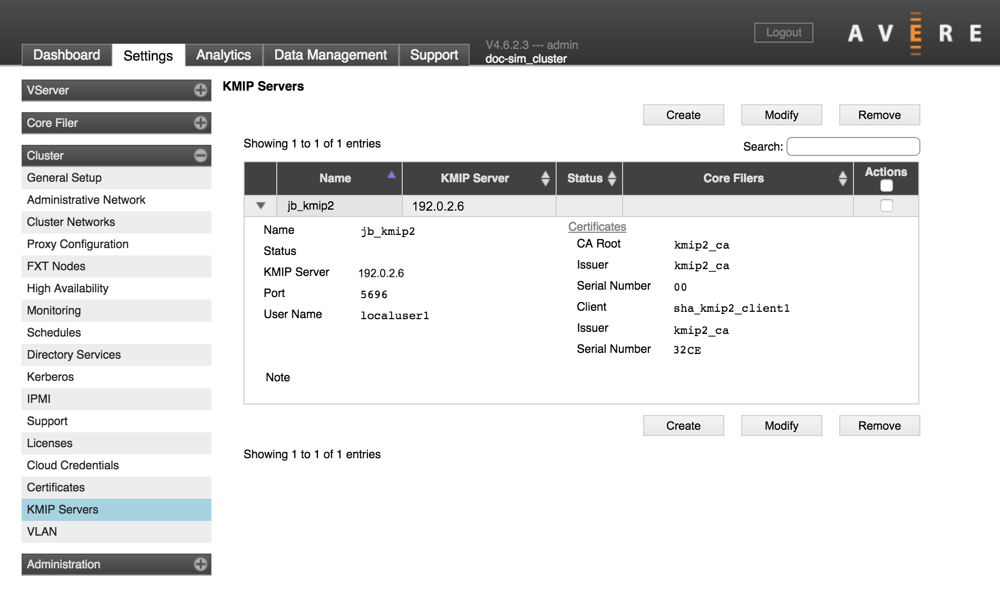
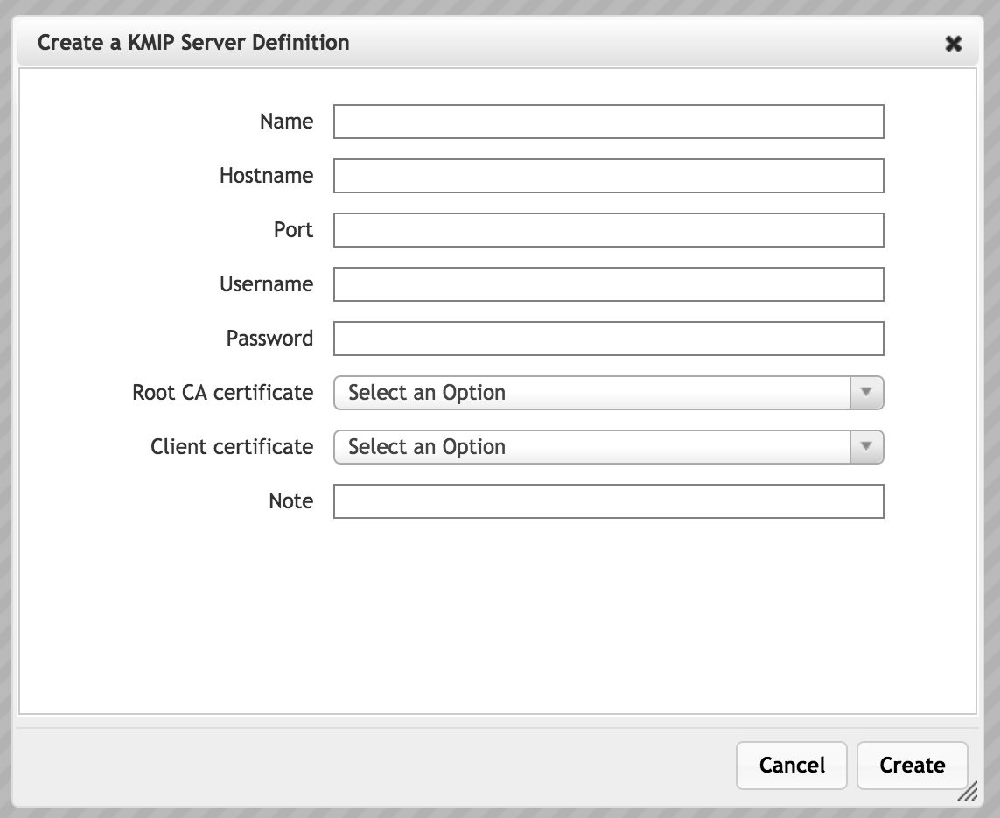
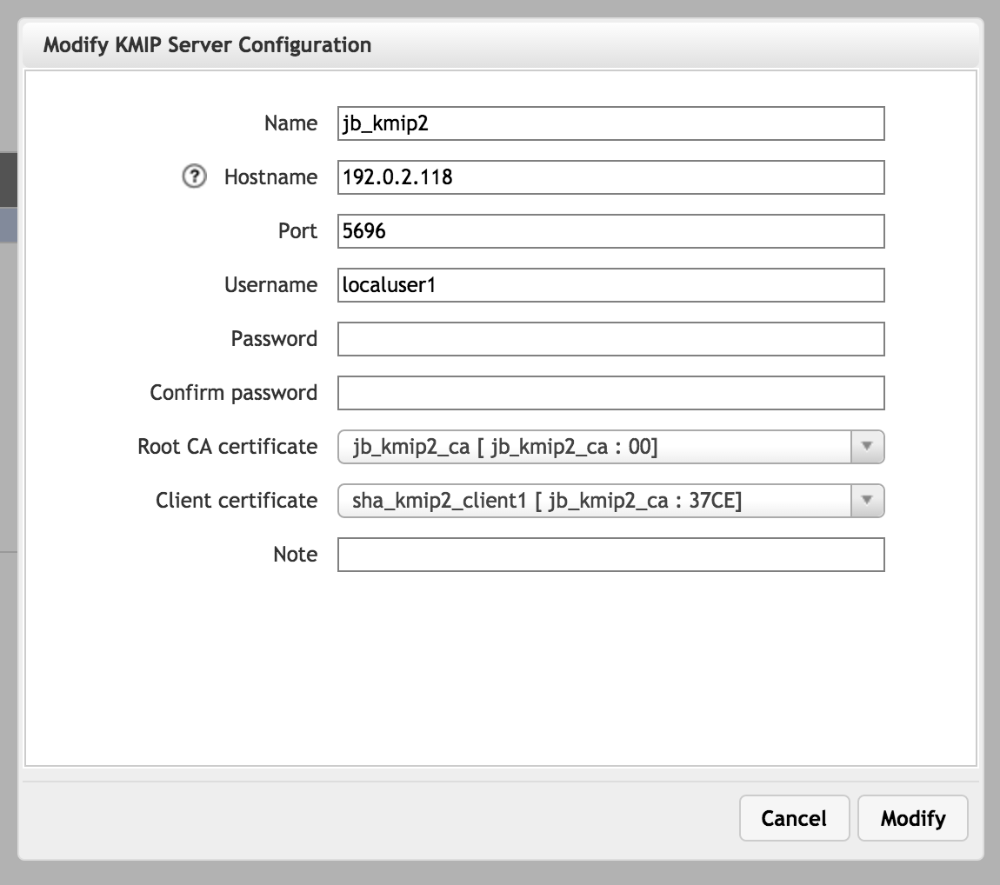

Cluster > KMIP Servers
{kind=link}
This page lists any KMIP servers already known to the cluster, and has controls to add, modify, or remove servers.
Before attempting to add a KMIP server, make sure that you have added the necessary X.509 certificates to the system by using the Cluster > Certificates page. Two certificates are required to define a new KMIP server:
- A root CA certificate, which is shared between the remote KMIP server and the Avere cluster
- A client certificate to authenticate the cluster when it connects to the server
Check the documentation for your KMIP server to learn what it requires for client authentication.
Read Configuring KMIP for an Avere Cluster to learn all of the pieces necessary to enable server-based key management on your cluster.
Defining a KMIP Server
To add a KMIP server to the cluster, click Create.
{kind=link}
Enter the following information.
- Name
- A text name that will identify the server in the Avere Control Panel
- Hostname
- Enter the fully qualified domain name or the IP address of the server.
- Port
- The server port to use for KMIP traffic
- Username
- (Optional) A login name for the cluster to use when connecting to the KMIP server. Consult your KMIP server’s administration guide to learn whether or not to provide a value in this field.
- Password
(Optional) A password to use with the username above. Consult your KMIP server’s administration guide to learn whether or not to provide a value in this field.
Important
Different KMIP servers require different attributes for authenticating connections. You must configure the correct set of attributes according to the KMIP server software that you use. For example, some KMIP servers require both a client certificate and a username and password, but other servers require a client certificate and require that the username and password fields be blank. The Avere Control Panel does not validate that the information entered in this page is correct for the type of KMIP server being used.
- Root CA Certificate
- Select the certificate that defines the trusted CA for KMIP authentication. This certificate must exist in the system already; add certificates by using the Cluster > Certificates page.
- Client Certificate
Select the certificate used to authenticate the cluster to the KMIP server. This certificate must exist in the system already; add certificates by using the Cluster > Certificates page.
The Avere Control Panel requires a client certificate when defining a KMIP server because most KMIP server implementations require a certificate for client authorization. If this restriction causes a problem in your system, contact Avere Global Services for assistance.
- Note
- Optionally, enter a text note about the server to help with administration.
After setting the values, click the Create button to save the configuration.
Modifying or Deleting a KMIP Server
To change parameters or remove a KMIP server definition from the cluster, locate the server entry in the list and check its Actions box. Click the Modify button to update parameters in the selected server, or click the Delete button to permanently remove it from the system.
The screen for modifying a KMIP server definition is similar to the screen used to create one; change the values and click the Modify button to save the changes.
{kind=link}
When modifying a server definition, the existing password is not shown. The blank Password field does not indicate that there is no password stored.
Using a KMIP Server
KMIP key management can be selected when creating a new cloud core filer, or on the Cloud Encryption Settings page in the Core Filer settings section of the Avere Control Panel.
An Encryption Key Store selector appears in the third page of the cloud core filer wizard, and at the top of the Cloud Encryption Settings page. The KMIP servers defined on this page are options.
The alternative to KMIP is a simple key store, which is managed locally.
Read Configuring KMIP for an Avere Cluster for an overview of all the steps required to enable KMIP on your Avere OS cluster.